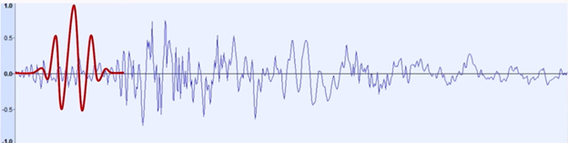
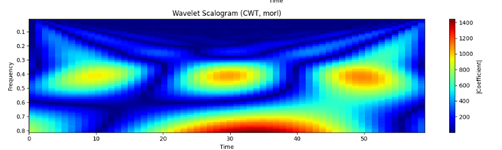
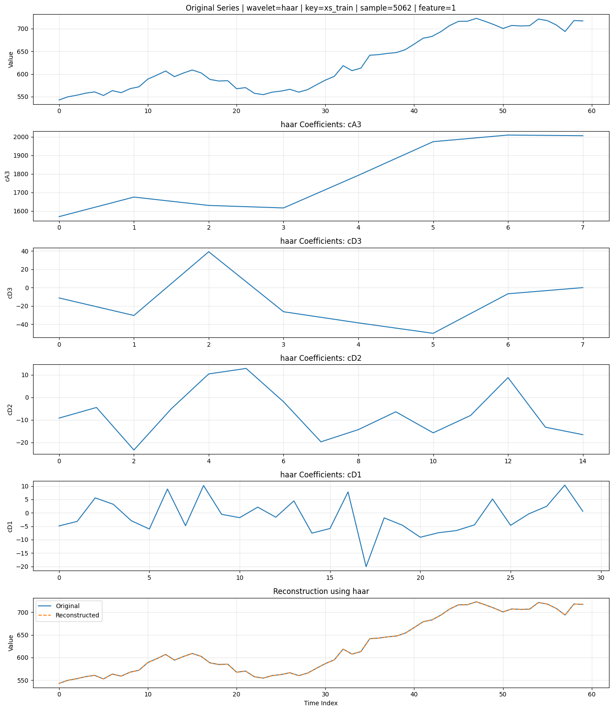
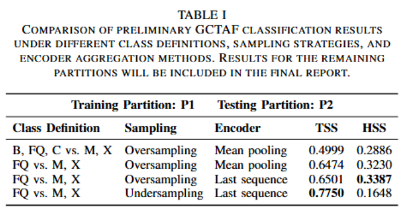
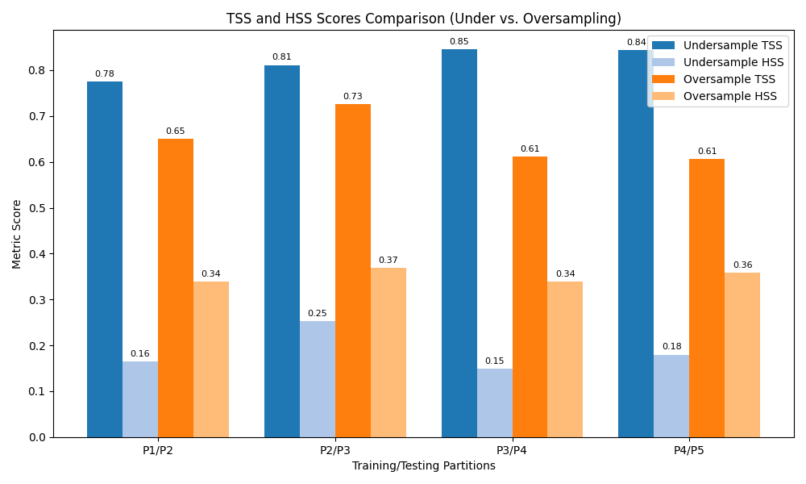

The Fourier Transform tells us which frequencies are present in a signal, but it does not tell us when those frequencies occur. In other words, it has strong frequency resolution, but no localization in time.
To address this limitation, time-frequency methods such as the Short-Time Fourier Transform (STFT) and the Wavelet Transform are used.

In STFT, the signal is divided into small time windows, and the Fourier Transform is applied inside each window. This allows us to know that an event occurs within a certain window, but not its exact location inside that window.
The main limitation of STFT is that the window size is fixed. A longer window gives better frequency resolution but poorer time resolution. A shorter window gives better time resolution but poorer frequency resolution. This creates a trade-off that cannot adapt to all parts of the signal equally well.
The Wavelet Transform improves this by using multi-resolution analysis. Instead of a single fixed window, it uses large windows for low-frequency components and small windows for high-frequency components.
This is useful because high-frequency components usually correspond to short-duration events, so they need better time localization. Low-frequency components vary more slowly, so they benefit more from better frequency resolution.
Therefore, the Wavelet Transform provides a more adaptive time-frequency representation of the signal.
Among these wavelet families, Haar is the simplest. It works by taking neighboring samples and computing two quantities: the average, which forms the approximation coefficients, and the difference, which forms the detail coefficients.
This makes Haar easy to understand and computationally efficient. However, because it is piecewise constant, it is less smooth than other wavelet families.
Daubechies wavelets are more sophisticated. Instead of using only immediate neighbors, they use longer filter coefficients to capture more of the signal structure. As a result, they represent trends and smooth variations better than Haar.
Symlets are closely related to Daubechies wavelets. They are designed to be more symmetric while still preserving the main advantages of the Daubechies family. This often gives a better balance between compact support and symmetry.
In implementation terms, Haar can be understood directly through local averages and differences, whereas Daubechies and Symlets are usually described through low-pass and high-pass filter coefficients applied recursively to the signal.
For solar flare data, time-frequency analysis is important because the signal can contain both slow-varying trends and sudden bursts of activity.
A wavelet-based representation helps separate these behaviors across scales. Low-frequency components capture the overall long-term variation, while high-frequency components highlight rapid changes and localized events that may correspond to flare activity.
This makes the Wavelet Transform especially useful for analyzing non-stationary scientific signals such as solar observations.

Once the Haar transform is applied, the signal is decomposed into approximation coefficients and detail coefficients.
The approximation coefficients represent the coarse, low-frequency structure of the signal, while the detail coefficients represent rapid changes, edges, or localized fluctuations.
By plotting these coefficients, we can visually identify where the signal changes sharply and where it remains smooth. This is one of the reasons Haar wavelets are useful for detecting abrupt events in time-series data.



